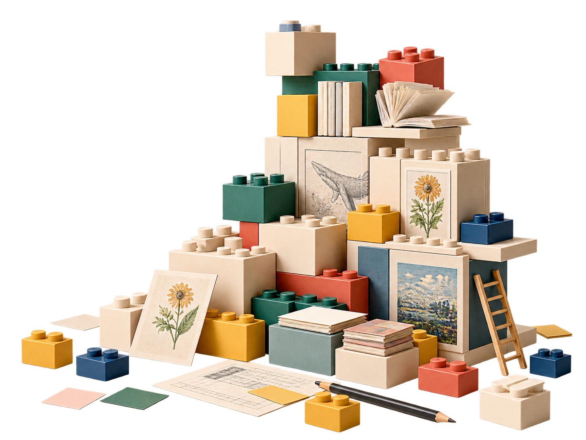

EDITORIAL · PLANNING · PROJECT MANAGEMENT
책을 만들고,
구조를 설계합니다.
아동·청소년부터 성인물까지 기획, 원고 개발, 편집을 수행한
작업 도서 아카이브입니다.
200+titles participated
96archived groups
10+ yrseditorial career

WORKS ARCHIVE
작업 도서
조건에 맞는 도서가 없습니다.